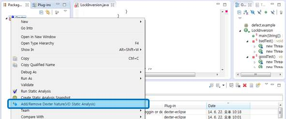
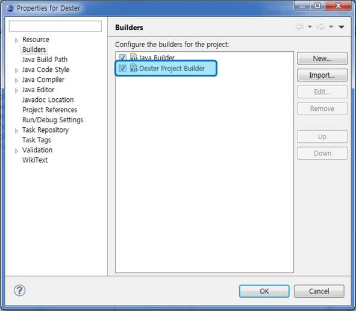

> Advanced work for Dexter
1. If you run Dexter, you Must " Add Dexter Nature " on your project as below.

If you want to remove Dexter Nature, you click "Add/Remove Dexter Nature" again.
[> CHECK POINT]
If you want to check Add that project, you can check Dexter Icon with Project
with Project

and Properties in Properties > Builders > Dexter Project Builder as below.
